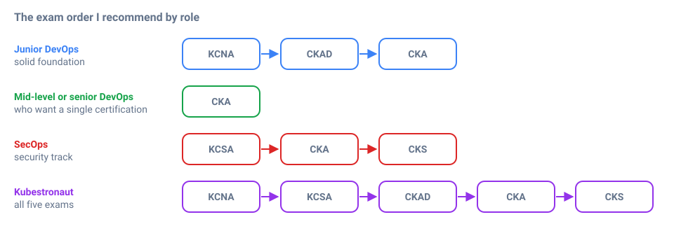

Blog Post Publish Date: 2026/11/15
Kubestronaut: My Honest Journey (Including Procrastination and Retake)#
This post is an honest account of how I passed the five CNCF Kubernetes certifications (CKA, KCNA, KCSA, CKAD, and CKS) and became a Kubestronaut. I share how I overcame a year of procrastination and why I failed the CKS even though I was prepared for it. I also cover the study routine and methods that worked for me, what each exam asks for, and the order I recommend for your professional profile.
DISCLAIMER: Everything in this post comes from my own experience, in my context and my life. Don’t take it as an absolute recommendation. I’m not trying to say what is “right”, only to share what I went through. What worked for me might not work for you.
Why I Wanted the Certifications#
I started the Kubestronaut path as a senior DevOps engineer, after more than five years of working with Kubernetes every day. The title didn’t change much in my career. At my level, market experience still counts more than a certificate. What I wanted was a reason to study the parts of Kubernetes I never touched at work, and the exam curriculum gave me a study roadmap for them.
The title also comes with some perks. According to the Kubestronaut Program page, a Kubestronaut gets an exclusive jacket, a Credly badge, and access to a private Slack channel and mailing list. Every year, you also get five 50%-off certification coupons, which you can use yourself or share, and 20% off three CNCF events, such as KubeCon or KubeDays.
Knowing a subject is different from mastering it. Knowing means you understand which tools exist to solve a problem. Mastering means you have the practical experience to pick the solution closest to ideal for a given context, and that only comes with time and real work. A certification says you know Kubernetes. It doesn’t say you master it.
From what I’ve seen and talked about with colleagues, the market uses these certifications mostly to speed up interviews and to strengthen your position when negotiating a contract. They signal that you know the Kubernetes basics. Before you start, ask yourself honestly why you want one and what you’ll do with it, because the certificate alone won’t change your life. What you learn on the way is worth more than the badge.
People often tell me the exams are expensive, and they are, especially if you don’t earn in US Dollars. Still, the fee is the cheap part. The hours of study and the mental energy they drain cost much more.
What Each Exam Covers#
The five exams fall into two groups. KCNA and KCSA are multiple-choice exams, and you can’t consult anything. CKA, CKAD, and CKS are hands-on: you solve tasks in a terminal on a remote Linux desktop, with access to a list of official documentation sites.
Exam |
Format |
Duration |
Documentation allowed |
|---|---|---|---|
Multiple choice |
90 minutes |
None |
|
Multiple choice |
90 minutes |
None |
|
15 to 20 hands-on tasks |
2 hours |
kubernetes.io, Helm |
|
15 to 20 hands-on tasks |
2 hours |
kubernetes.io, Helm, Gateway API |
|
15 to 20 hands-on tasks |
2 hours |
kubernetes.io, Falco, etcd, Cilium, Istio, and others |
The format and duration come from each exam page, the CKA and CKAD tips, and the CKS instructions. The documentation list comes from the Resources Allowed page. The passing score is 66% for the CKA and CKAD and 67% for the CKS, according to the Linux Foundation FAQ.
KCNA (Kubernetes and Cloud Native Associate): is for people starting with Kubernetes. It asks conceptual questions like “what is a Pod?”, “what is a container?”, “which component decides on which node a Pod runs?”, or “what is the difference between a Deployment and a StatefulSet?”. If you already work with Kubernetes, even at a junior level, you’ll pass it with your eyes closed.
KCSA (Kubernetes and Cloud Native Security Associate): follows the same idea, but with security concepts. For a SecOps engineer it’s easy. For me it wasn’t, and I don’t think a mid-level or senior DevOps engineer should underestimate it. It asks things my SecOps colleagues know by heart, such as what an SBOM is or which Trivy flag does a specific thing. Expect questions like which Pod Security Standard blocks privileged containers, what an attacker could do with direct access to etcd, or what the 4Cs of cloud native security are. Gaps like this one are why I wanted the Kubestronaut path in the first place.
CKAD (Certified Kubernetes Application Developer): is where it gets interesting, and it’s the simplest of the hands-on exams. It covers using a cluster: scaling a Deployment, rolling back, reading logs, analyzing errors. A typical task asks you to create a Deployment and expose it with a Service, add a liveness probe to a Pod, or mount a ConfigMap or a Secret into a container. Others ask you to schedule a CronJob, add a sidecar container, or install a chart with Helm. The name is misleading. You don’t need to program anything, at most a trivial Bash script that prints something. Python, Go, or Java knowledge is useless here. “Application Developer” describes someone who gets a working cluster and needs to deploy an application to it, not someone who writes Kubernetes Operators or controllers.
CKA (Certified Kubernetes Administrator): is denser. It covers everything in the CKAD plus cluster provisioning and operation: configuring the kubelet, diagnosing a node that can’t join the cluster, reading systemd logs, and upgrading a cluster. You may also need to fix a broken control plane component, find out why a Pod is stuck in Pending, or give a user access to a namespace with a Role and a RoleBinding. Other tasks ask you to expose an application through the Gateway API or create a PersistentVolumeClaim from a StorageClass. Troubleshooting is the biggest part of the exam.
CKS (Certified Kubernetes Security Specialist): is the exam I have the most reservations about. It isn’t hard, but it covers the most topics and tools, none of them very deep. Besides Kubernetes security itself, such as NetworkPolicies, Roles, and ClusterRoles, it asks you to use security tools to verify image signatures, check container image dependencies, and run Docker without root. Other examples are writing a NetworkPolicy that denies all traffic by default, applying an AppArmor or seccomp profile to a Pod, or enforcing a Pod Security Standard in a namespace. You may also scan images for vulnerabilities, find a suspicious process with Falco, or enable audit logs on the API server.
My reservation is the prerequisite: you must pass the CKA before taking the CKS. In my exam, one task was to upgrade the cluster. The curriculum lists it under cluster hardening, as a way to avoid known vulnerabilities, and I understand the reasoning. Still, upgrading a cluster felt much closer to the CKA than to a security exam. I think this overlap makes the path harder for people who want a security track, and the KCSA would be a more sensible prerequisite.
These are only examples to give you an idea. The full list of topics for each exam is in the CNCF curriculum repository.
Because the hands-on exams let you open the official documentation, don’t try to memorize everything. Learn to do the tasks using the docs as a guide, and remember where each piece of information lives. Not every tool is on the list, though: Trivy, for example, isn’t, so practice its flags before the CKS.
The Order I Took Them, and the One I Recommend#
I took them in a poorly planned order: CKA, KCNA, KCSA, CKAD, and then CKS. There was no logic behind it, and that is one of the reasons I wrote this post. If I were starting again, I’d pick a path based on my role:


A junior DevOps engineer gets a solid foundation going from the KCNA to the CKAD and then the CKA. If you’re a mid-level or senior DevOps engineer and want only one, take the CKA. I don’t recommend taking only the CKAD. The CKA covers everything in the CKAD, so preparing for the CKA also prepares you to pass the CKAD with little extra study, and taking the CKAD later becomes easy if you want it. If you’re in SecOps, start with the KCSA, then the CKA (unfortunately, because of the CKS prerequisite), then the CKS. And for the Kubestronaut title, go from the easiest to the hardest: KCNA, KCSA, CKAD, CKA, and CKS.
Also check the current requirements before planning the full path. The Linux Foundation announced that starting February 15, 2027, the Certified Kubernetes Network Engineer (CKNE) will also be required for Kubestronaut status. Because it’s a new exam, I would leave it for last. That gives the community time to share feedback about it, and gives course creators time to publish courses and practice exams.
I also disagree with the idea that these certifications are only for people who already master Kubernetes. They suit people who are learning it even better. If I knew nothing about Kubernetes today, I would study for the certifications instead of watching random YouTube videos. The curriculum makes the learning curve much less tortuous.
Prices, Bundles, and Promotions#
The Linux Foundation sells the CNCF certifications in US dollars, without purchasing power parity (PPP) pricing. Besides single exams, it sells bundles for specific tracks, such as the Kubestronaut Bundle with every exam the title requires, and upgrade bundles for people who already hold the CKA or the CKAD. For a security track, there are the KCSA + CKS and CKA + CKS bundles. Smaller combinations include the KCNA + CKA and the CKA + CKAD + CKS. The bundles vary over time, so check the current offer on the Kubestronaut Program page and the Linux Foundation store before buying.
Don’t pay the full price. Wait for a promotion. In my experience, October and November usually bring discounts of up to 50%. Bundles also tend to get a better discount than buying each exam separately.
So before buying anything, define the track of certifications you want. If it’s a full track, buy its bundle. If you want only one certification, buy that single exam. Buying a bundle without knowing what you want from the certifications puts an unnecessary weight on you.
A Year of Procrastination, Then Six Months of Focus#
Before the six months in which I passed everything, I procrastinated for a whole year. I would start studying, stop, come back weeks later, and remember nothing. Every restart, I had forgotten the imperative kubectl commands and had to learn them again.
What changed was the gym. I have trouble with focus, and starting a regular exercise routine trained the discipline I then used to study. I only managed to finish the certifications because I started going to the gym at the same time. Running, walking, or any regular sport should work the same way.
The routine that worked for me was one hour a day. Not two, not three. A five-hour rush on Sunday doesn’t make you learn. I kept one day a week, usually Sunday, without studying. And I stopped negotiating with myself: “I won’t study today, but tomorrow I’ll do two hours” is the beginning of failure.
Two more habits helped. I didn’t keep checking the course progress bar, because that only triggered anxiety. And I stopped telling people I was studying for a certification. Our brain is dumb: when we announce that we’re doing something, it feels like we already did it. There’s research behind this. Peter Gollwitzer and colleagues ran four experiments on identity-related intentions, such as studying law to become a lawyer, and published them in Psychological Science. When other people took notice of the intention, participants acted on it less than those whose intention was ignored. Being noticed gave them a premature sense of already having that identity (Gollwitzer et al., 2009). Finish the exam first, then show it off.
Finally, I used a single study source: the KodeKloud courses. That choice surprised me, because I’ve always struggled with video courses. I lose focus quickly, so I’ve always studied from physical books, on paper, away from notifications and from the quick glances at email, WhatsApp, and Instagram that feed you cheap dopamine. Even with that resistance, I loved KodeKloud. I’m not paid to say this, but they are the best courses I’ve ever taken: a video lesson, then a lab prepared only to practice what the lesson covered, with no distractions. Every lesson also has a full text transcript and translated subtitles. KodeKloud also publishes its courses as text on KodeKloud Notes, such as the CKS course. The best part is that the text version is free and doesn’t require a subscription. I switched to it on the days I was tired of watching videos. Every topic in the course is worth studying, especially the ones that aren’t on the exam, such as TLS.
When a topic was hard for me to understand, I talked about it with ChatGPT in voice mode until it made sense. Saying the question out loud and going back to the part I still didn’t get helped me understand concepts that were difficult for me. It also let me express my frustration with the topic, almost like venting.
How I Prepared for the Hands-On Exams#
Don’t overestimate yourself. If you’re an experienced DevOps engineer who knows Kubernetes well and thinks you’ll pass easily, be careful. In the exam there’s no Google, no AI, and no IDE you’re used to. Maybe you don’t need to study Kubernetes, but you definitely need to study for the exam. Knowing how to do everything isn’t enough. You need to do everything fast, in Vim, in a laggy remote terminal, with the clock in your head. The exam has no trick questions. It’s well designed and reasonably difficult, but it requires solid preparation, and you can’t pass it after studying for a weekend.
The labs mattered more than the videos. For the final preparation, I redid all the KodeKloud mock exams until I got everything right, no matter how many times it took. Then I did the two Killer Shell simulator sessions until I got them right too. Each session is only available for a limited time after you activate it, so I reserved a weekend for each one. The simulator looks a lot like the real exam environment.
I also used CK-X, an open source project that runs a Killer Shell-like simulator locally with Docker Compose, for free. It helped me a lot. Practice questions are never too many, so I also used the CKS exam guide and solved CKS questions by David Puziol.
One thing I would skip: a home lab. I bought a mini PC on AliExpress, installed Proxmox, and built base images for my cluster. I spent more time fighting Proxmox and networking than practicing Kubernetes, while the course labs were ready to use.
Drill the imperative kubectl commands until they’re automatic, because they generate resources and YAML much faster than writing manifests by hand. Learn Vim too. You only need it to edit YAML, but you need to do that well, and I wrote Vim for Kubernetes Certification Exams about the techniques I used. Finally, prepare your workstation. Keyboard layouts and shortcuts can break you, especially on a MacBook with a Brazilian layout, where a dead key can stop you from typing ~ in cd ~/Documents. My checklist is in Workstation Setup for Kubernetes Exams.
Failing the CKS by One Point#
The CKS passing score is 67%. On my first attempt, I scored 66%.
During the exam, I got stuck on a task to configure Docker to expose the runtime over TCP instead of the Unix socket. I knew how to do the rest of the exam, but I didn’t know that one at first, and I kept insisting on it. When I noticed the time, I had about 10 tasks left and less than 60 minutes. If a task is on a topic you don’t master, skip it and come back later.
But perfectionism wasn’t the only cause. For every exam, I keep a rule: the day before, I don’t touch the computer, stay fully offline, and don’t study. A hands-on exam needs a rested mind. For the first CKS attempt, I broke that rule. I spent about eight hours on Sunday redoing every lab, and on Monday at 8 AM I was tired and making simple mistakes.
On the second attempt I followed my rule and passed with 81%. My suggestion is to schedule the exam for Monday morning, with Sunday free: sleep a lot, go to the mall, have an ice cream. On a Monday morning, your mind isn’t yet filled with work problems.
If you fail, you’re not a failure. You get the chance to prepare more and end up knowing more than someone who passed by luck. Failing would be giving up or going back to procrastinating.
Was It Worth It?#
I really enjoyed the Kubestronaut journey. It cost me a lot of energy and some sacrifices in my personal life, but it was an enriching experience. Besides learning topics I don’t use at work, it made me a more resilient person. Some topics are fun and some are very boring, and you have to accept both. If you’re still thinking about it, buy the exam and do it.
I reserve a special thanks for my former coworker and Golden Kubestronaut Mateus Müller, who helped me structure my studies and gave me tips about the exams.
Key Takeaways#
A certification proves knowledge, not mastery.
The real cost is study time and mental energy, not the fee.
Define the track, then buy its bundle on promotion.
Study one hour a day, with one day off. The gym helps with focus.
Use one study source: KodeKloud courses, with free text versions on KodeKloud Notes.
Prioritize hands-on practice: imperative kubectl, Vim, and the official docs.
Skip the home lab. Spend your time on Kubernetes, not on Proxmox and virtualization.
Rest the day before the exam, and schedule it for Monday morning, before work.
References#
Frequently Asked Questions: CKA, CKAD, and CKS (Linux Foundation)
Kubernetes and Cloud Native Security Associate (Linux Foundation)
I’m Carlos Neto, and this blog is a brain dump of my career experience. More about me on my home page. If you have questions or a different approach, contact me on LinkedIn or leave a comment below.